微信聊天记录获取
要分析微信聊天记录，首先要获取到微信存储在手机上的聊天记录，我这里是通过备份后拿到微信的聊天记录的。其他的方法大家可以百度找一下。
首先打开itunes，在备份里面选择备份到本地电脑，千万不要勾选加密备份。
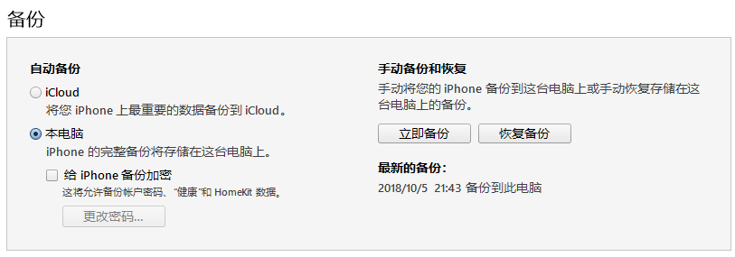
因为我们的备份是备份的整个手机的数据所以我们需要借助itools这个管理工具来从备份中获取到微信聊天记录。下载安装itools后，在更多里面选择iTunes备份管理，打开后选择你刚刚在itunes里面的备份。
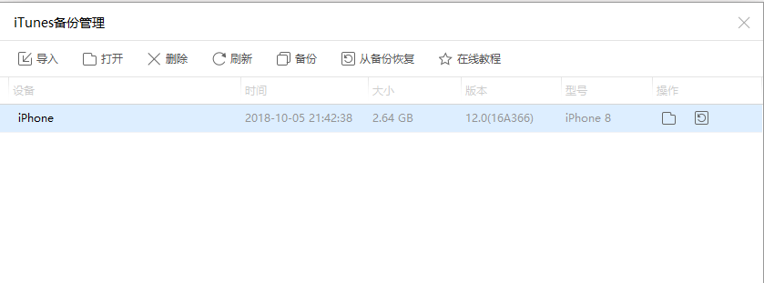
然后打开路径/var/mobile/Applications/com.tencent.xin/Documents/你的微信id/DB，选择目录里面的MM.sqlite导出，这个MM.sqlite就是你微信聊天记录的数据库文件了。
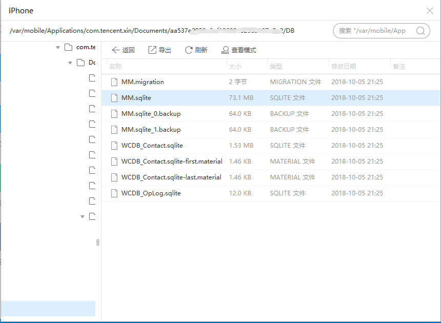
用数据库管理工具打开是这样滴：
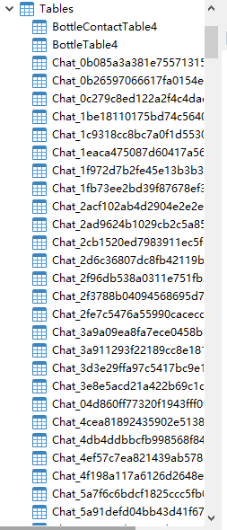
这里面的表大部分是你和好友的微信聊天记录，一个好友一张表，接下来，找到和基友的聊天记录导出成Excel文件，接下来就开始分析和基友的聊天记录了。
聊天记录分析
首先导入我们分析所必要的库：
1 | import pandas as pd |
导入聊天记录文件
1 | df = pd.read_csv(r'D:\data\a.csv') |
查看一下前面五条聊天记录：
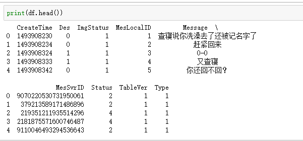
解释下这里字段的意思：
| 字段 | 意思 |
|---|---|
| CreateTime | 这条聊天记录创建的时间 |
| Des | 我是否为消息的接收方，也就是说0是我发送的，1是好友发送的 |
| ImgStatus | 标记着头像的当前状态，猜测是为了更新头像用 |
| MesLocalID | 本地消息ID |
| Message | 消息内容 |
| MesSvrID | 服务端的消息ID |
| Status | 消息状态，比如发送失败，成功，正在发送 |
| TableVer | 表的版本，应该是数据表升级使用 |
| Type | 消息类型，10000: 系统消息，34: 语音，47: 表情，62: 小视频，50: 视频/语音通话，3: 图片，48: 位置， 42: 名片，49: 链接 |
查看下共有多少条聊天记录：
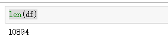
一起10894条聊天记录
接着分析下我给基友发送的消息数量和基友给我发送的消息数量：
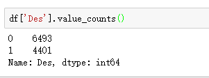
我给基友发送了6493条消息，基友给我发送了4401条数据。
画成直方图是这样的：
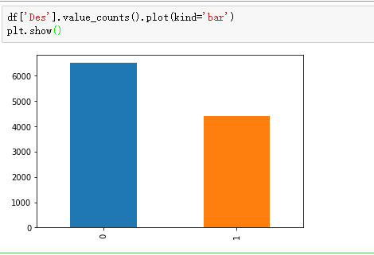
然后看一下和基友的消息类型：
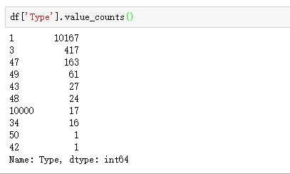
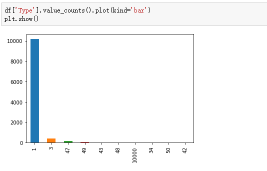
占了最多的是文字信息，共有10167条，其次是图片，有417条(斗图还不够多啊)
最后把我跟基友的聊天记录分词后生成一个词云如下：
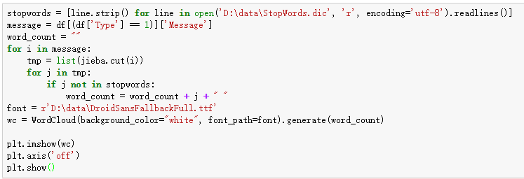
本文首发于我在万达摆地摊's blog，转载请注明来源